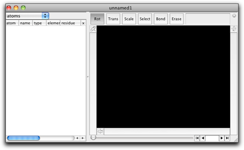
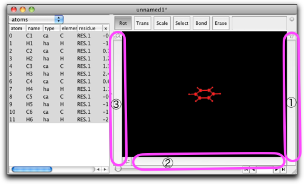

第一段階：新しい分子を描く
1. 分子を作る
Molbyを立ち上げてください。下のような空のウィンドウが現れます。このウィンドウが、分子を取り扱うためのメインウィンドウです。

ベンゼン分子を作ってみたいとします。画面の黒いところ（編集エリア）をダブルクリックすると、"enter formula" と指示が出ます。"C6H6" とタイプして、OK を押します。

編集エリアにベンゼン分子が現れます。原子と結合は赤色で描かれていますが、これは「選択されている」という表示です。左側には表があり、原子の位置などの情報を数値で表示しています。この部分については、あとで詳しい使い方が出てきます。

2. 分子を回転させる
編集エリアの両側と下には、分子を回転させるバーがあります。このバーでマウスボタンを押し、そのままドラッグしてみてください。

- バー１：水平軸の周りに分子を回転させる。
- バー２：垂直軸の周りに分子を回転させる。
- バー３：分子の選択部分を回転させる。（今は分子全体が選択されているため、バー２と同じ動作をします。）
次に、編集エリアの上にあるボタンを見てください。一番左の "Rot" が選択されています。これは、このウィンドウが現在「回転 (Rotation)」モードにあることを示しています。この場合、編集エリアでマウスをドラッグすると、分子全体を自由に回転させることができます。
注: 分子に近すぎるところからドラッグを始めないように注意してください。選択している原子・結合の上でドラッグを始めると、選択部分がマウスについて動いてしまい、分子全体を動かすことができません。
3. Translate and scale
"Trans" と書かれたボタンを押してください。ウィンドウは「並進 (Translate)」モードになります。編集エリアでマウスをドラッグすると、分子全体を平行移動させることができます。
注: 回転バーの機能は変わりません。

次に、"Scale" と書かれたボタンを押してください。ウィンドウは「拡大縮小 (Scale)」モードになります。編集エリアでマウスをドラッグすると、分子全体を拡大・縮小することができます。

"View" メニューの中に "Fit to Screen" メニューコマンドがあります。このコマンドは、分子をウィンドウサイズに合わせて表示したいときに便利です。
分子を画面上で動かす方法がわかりました。次は、編集のやり方を説明します。